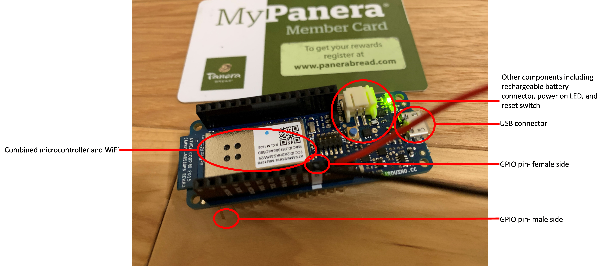
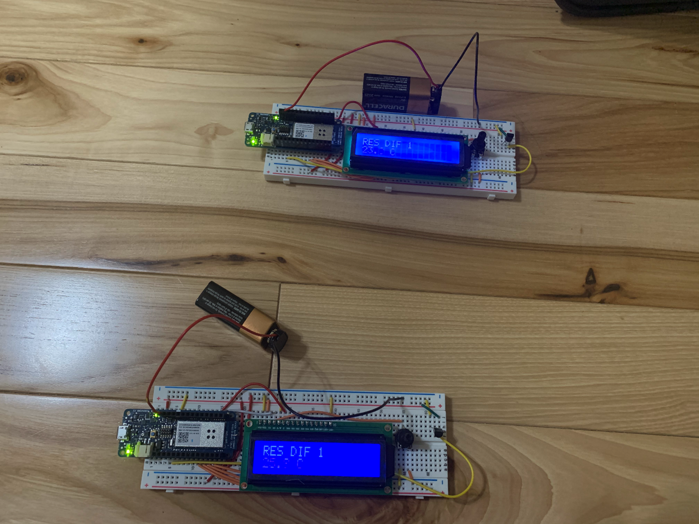
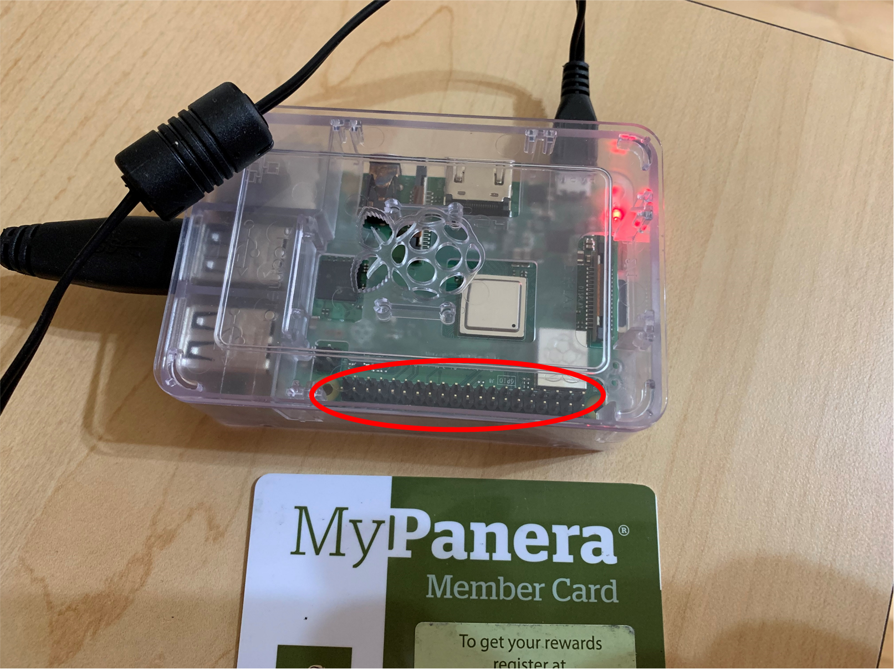
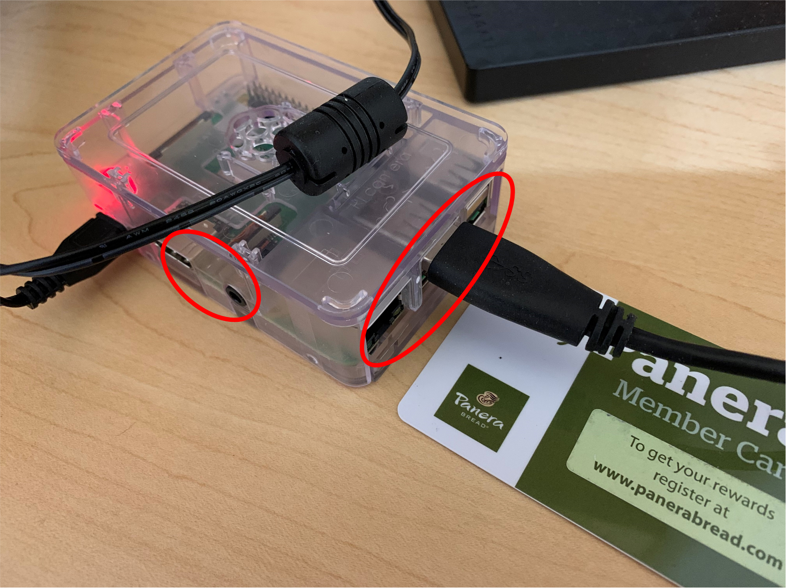

Programmable Hardware: Single-Board Devices
Most Internet of Things prototyping will center around the single-board. The personal computer is centered around the mother board, on which we seat a central processing unit and any co-processors. We then connect peripherals like volatile memory, disks, and networking using expansion slots to the motherboard via the various buses.
With Internet of Things, all the computational hardware is typically physically located onto a single board that is often of a size comparable to a credit card or smaller. The definition of single-board encompasses both network-enabled single-boards and non-network-enabled single-boards. Given this paper focuses on Internet of Things, the assumption is the boards have or can be provided with networking capability.
Single-boards can broadly be divided into two classes-single-board microcontrollers and single-board computers as summarized in the table below.
| Microcontroller | Computer | |
|---|---|---|
| Typical Use | Manipulate electronic components that produce/require simple data types | Manipulate electronic components that produce/require complex/multimedia data types |
| Operating Process | Initialize and Loop | Boots through an Operating System |
| Peripherals | Often,none | Often,required |
Microcontroller Single-Boards
Microcontroller single-boards are relatively simple programmable Internet of Things components. The typical microcontroller single-board comes with the following components: (1) the microcontroller, (2) a chip that enables network connection, (3) general purpose input-output (GPIO) pins to connect the microcontroller board to other electronic circuits, (4) a USB connector to upload code to the board and for diagnostics and debugging, and (5) associated secondary components (e.g., diagnostic light emitting diodes- LEDs).

Figure 1: An Arduino MKR 1000 Microcontroller Single-Board
It is possible to use microcontroller single-boards that do not have on-board networking for Internet of Things development. Networking can be added by soldering on networking chips like the ESP 32 or ESP 8266. Alternately, some microcontroller single-boards are expandable. For example, the non-network enabled boards sold by Arduino can be upgraded through the purchase of shields, including a shield that provides networking capability.
A GPIO pin is the single-board equivalent of an expansion slot. One connects a circuit component to the GPIO pin either directly, or with a wire. There are two kinds of GPIO pins- female and male pins. A female pin is fundamentally a hole which allows for the insertion of a wire. A male pin is a metal pin that is to be inserted into a female connector. A particular pin can be male, female, or have both male and female connectors.
The particular GPIO pins on a single-board can have generic or specific capabilities. A generic GPIO pin could be used to read or output either a digital signal (i.e., an electrical current that has only a low or high state) or an analog signal (i.e., an electrical current where the voltage can vary within a range). A GPIO pin with specific capabilities will be linked to a particular function on the single-board. For example, GPIO pins 14 and 13 on the Arduino MKR 1000 are the transmit and receive pins. They are linked to the WiFi chip such that one can use them to read or write WiFi signals.
Figure 1 presents a typical IoT microcontroller single-board, the Arduino MKR 1000. The core of the Arduino MKR 1000 is the Atmel ATSAMW25 SoC (System on Chip), which combines the microcontroller, WiFi module and an encryption module into a single chip. The MKR 1000 has a total of 28 GPIO pins, all of which have a female and male connector. All the GPIO pins have their own specialized functions. For example, 15 of the pins are digital pins, capable of either reading or outputting a digital signal. Seven of the pins are analog pins, capable of reading signals of various strengths, etc. One of the pins is the ground pin used to earth circuits, while another is the steady power pin that provides a continuous flow of current that is important for some circuits. The MKR 1000 also has a USB-C connector, which is principally used to connect the MKR 1000 to a computer. One can then upload code from the computer to the MKR 1000 and have the MKR 1000 send diagnostic information to the computer. Finally, additional components are soldered to the MKR 1000, including various light emitting diodes, a JST connector for a rechargeable battery and a reset switch.
Microcontroller single-boards are ideal for prototyping Internet of Things devices that principally involve connecting electronic circuits that read in or produce data involving simple data types. For example, the typical temperature sensor (e.g., the TMP-36) produces voltage signals that are read in as floating point numbers. A microcontroller single-board is ideal to combine with a temperature sensor to produce an Internet of Things thermometer. Figure 2 presents one such example using an Arduino MKR 1000.

Figure 2: Prototype IOT Thermometers
Example microcontroller boards today include:
- The Arduino Nano RP 2040 Connect. This replaced the MKR 1000 which is no longer sold.
- Other Arduino boards. Most boards can be WiFi enabled with a WiFi shield. Arduino sells other WiFi enabled boards like the Nano 33 IoT.
- Boards by Particle. The Particle Photon 2 is the Particle competitor to the Arduino WiFi boards.
- Raspberry Pi Pico. This is a competitor product by Raspberry Pi. The Pico does not come with prebuilt IoT capability, but this can be added by (for example) soldering on an ESP 32.
- Texas Instruments MSP 430 series. The MSP 432U is the Texas Instruments WiFi competitor.
Single-Board Computers
Single-board computers are computers. They have operating systems, and can use device drivers to connect to peripherals like cameras, projectors, speakers, television sets, etc. Single-board computers normally come with GPIO pins to connect to simple components, but also have connectors that allow them to interface with more complex components.
To illustrate, Figure 3 presents an example Single-Board Computer, the Raspberry Pi 3 Model B+. As the picture demonstrates, the Pi has a set of (male-only) GPIO pins. However, it also has HDMI, audio, ethernet and USB interfaces.
 |
 |
| (a) GPIO pins | (b) Connectors to other components |
| Figure 3: Pi 3 Model B+ | |
While one can use single-board computers to build simple IoT devices, it is more difficult to use these than single-board microcontrollers. This is because there is substantial overhead required to get a single-board computer to simply start. As a computer, the single-board computer needs an operating system, typically a Linux variant. One would then have to install a programming language and other software on the computer. The power on self-test for single-board computers is noticeably longer than that of sngle-board microcontrollers.
However, if one wants to create an IoT device that inputs or outputs complex data, a single-board computer is much easier to use than a single-board microcontroller. That single-board computers use operating systems means there are device drivers available to manage the interaction with components like cameras, projectors, televisions, speakers, etc. Furthermore, because Linux is often the default operating system for most of these computers, a large library of public, open-source code exists to help manage programming. Also, code written relying on a particular operating system on one type of single-board computer can often be installed on any other single-board computer using that operating system with minimal difficulties. This is because such code is often written at a relatively high-level of abstraction that relies on device drivers to do the actual machine-level interactions. In contrast, because code for microcontrollers is often closer to the hardware, code written for one type of microcontroller often does not work with another- even if the two types of microcontrollers are from the same manufacturer.
It is common to have both single-board computers and microcontrollers working together in Internet of Things systems. The microcontrollers are used to interface with simple components (e.g., simple sensors), the single-board computers are used to interface with complex components like cameras, and the whole is managed by one or more single-board computers.
Example single-board computers include:
- The Raspberry Pi model 3 and 4.
- The Nvidia Jetson series marketed as being good for machine-learning applications
- ODROID, which are principally designed to mount Android OS. Most single-board computers support variants of Linux.
- ASUS Tinker Board. A competitor to the Raspberry Pi that employs different connectors.
- Texas Instruments’ BeagleBoard series.